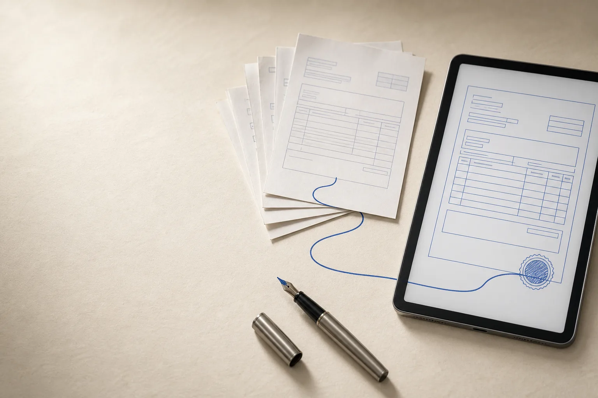

e-invoicing은 송장 발행과 매출 보고를 하나의 구조로 묶은 제도입니다.
한국에서 전자세금계산서 발행과 VAN을 통한 국세청 연동으로 나뉘어 있는 흐름이, 여러 국가에서는 하나의 전자문서 교환·보고 체계로 운영됩니다. 이 페이지는 그 구조를 설명하고, 알렉스소프트가 국가 단위로 설계한 경험을 소개합니다. 국가별 대응 서비스가 아니라, 그 경험이 아키텍처 판단에 어떻게 쓰이는지를 보여주는 페이지입니다.

- DOCUMENT
- 문서 스키마와 검증 규칙
- EXCHANGE
- ERP·전송사업자·세무당국 연동
- OPERATIONS
- 오류·재전송·감사 추적
한국의 전자세금계산서가, 해외에선 e-invoicing입니다.
한국에서는 전자세금계산서의 발행·전송과 VAN을 통한 국세청 매출 데이터 연동을 서로 다른 업무처럼 경험해 왔습니다. 여러 국가가 말하는 e-invoicing은 문서 교환과 매출 보고를 하나의 규격과 전송 구조 안에서 다룹니다.
전자세금계산서
거래 당사자가 정형화된 세금계산서를 발행하고 수신자와 세무당국에 전송합니다.
VAN 국세연동
결제와 매출 데이터를 국세청이 요구하는 구조에 맞춰 수집하고 보고합니다.
문서 교환·보고 체계
송장, 거래와 지급 데이터를 표준화해 검증·전송·보고·추적하는 하나의 시스템입니다.
필리핀의 정식 명칭이 Electronic Invoicing and Sales Reporting System인 이유도 여기에 있습니다. 전자송장을 주고받는 기능과 세무당국이 필요한 매출 데이터를 보고하는 기능을 함께 다루기 때문입니다.
WHY “ELECTRONIC INVOICING AND SALES REPORTING SYSTEM”
문서 표준에서 정부 이관까지.
알렉스소프트(ALEXSOFT)는 필리핀 국세청 e-invoice 시스템 구축 사업(KOICA, 2018–2022)에서 개발 PL로 개발 아키텍처와 e-invoice 문서 표준, 문서 교환체계의 보안 표준을 설계하고 개발을 이끌었습니다. 시스템은 2022년 가동해 현재도 운영 중입니다.
← 옆으로 밀어 전체 구조를 볼 수 있습니다 →
다수가 따라야 하는 문서 규격
한 조직 내부 포맷이 아니라 여러 사업자와 시스템이 같은 의미로 해석할 수 있어야 합니다.
교환체계의 보안과 추적
인증, 무결성, 전송 상태와 감사 이력이 운영 흐름 안에서 이어져야 합니다.
구축 이후의 운영 이관
표준과 코드뿐 아니라 장애 대응과 변경 관리까지 넘겨받을 조직을 기준으로 설계합니다.
실적 구분
- 1차 구축
- 2018–2022알렉스소프트의 구축 경험
- 2차 사후지원
- 2025–2026별도 수행사가 진행한 사업으로 알렉스소프트 실적이 아님
자주 묻는 두 가지.
한국의 전자세금계산서와 e-invoicing은 무엇이 다른가요?
한국에서는 세금계산서 발행·전송과 VAN을 통한 국세청 매출 데이터 연동을 나누어 경험해 왔습니다. 여러 국가의 e-invoicing은 이 두 흐름을 하나의 전자문서 교환·보고 체계로 다룹니다.
필리핀 BIR EIS 구축 경험은 어떤 도움을 주나요?
국가 규모 시스템에서 다수 사업자가 따라야 할 문서 표준, 교환체계 보안과 운영 이관을 함께 설계한 경험입니다. 2018–2022년 1차 구축과 2025–2026년 별도 수행사의 2차 사후지원은 구분해 설명합니다.
국가별 대응 패키지는 없습니다. 판단이 필요한 구조에 이 경험을 씁니다.
여러 사업자가 같은 문서를 같은 의미로 주고받아야 하는 시스템, 규제와 감사가 설계에 직접 걸리는 시스템을 설계할 때 이 경험이 근거가 됩니다. 필요하시면 아키텍처 설계·구현 상담에서 이야기합니다.